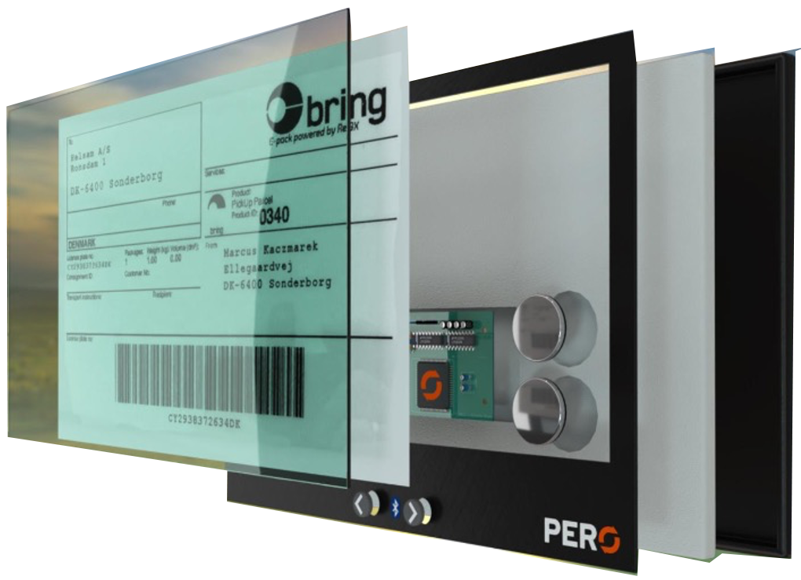

“By using cutting edge technology, we radically and lastingly change the way you think retail and securing life standards for the consumers of next generation.”
1

2
3
4
5
PERO is an intelligent and patented system that, mounted on suitable packaging, makes circular use of transport packaging possible
The PERO product contains an e-Ink label solution with relevant transport information, Cloud solution, Bluetooth 5.0 technology and Low battery consumption. Can be powered by coins cell batteries.
The PERO product continuous logs Time, Temperature, Humidity, G-influence and Rotation on the packaging in semi real/real time
An intelligent software backbone supports packaging handling from webshop to end user delivery and returning of the packaging incl. return labels. Eventually the PERO packaging can be re-programmed to new receiver.
PERO is designed to circulate all kind of packaging, allowing the same packaging to be resused up to 1,000 times.